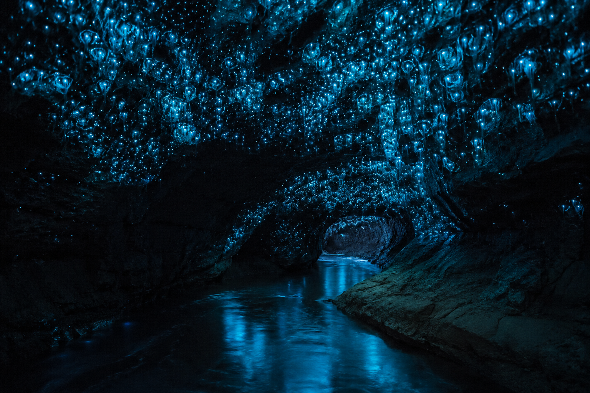
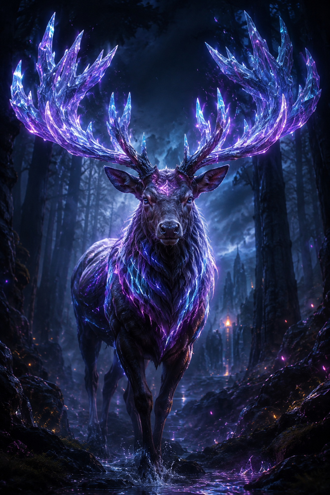
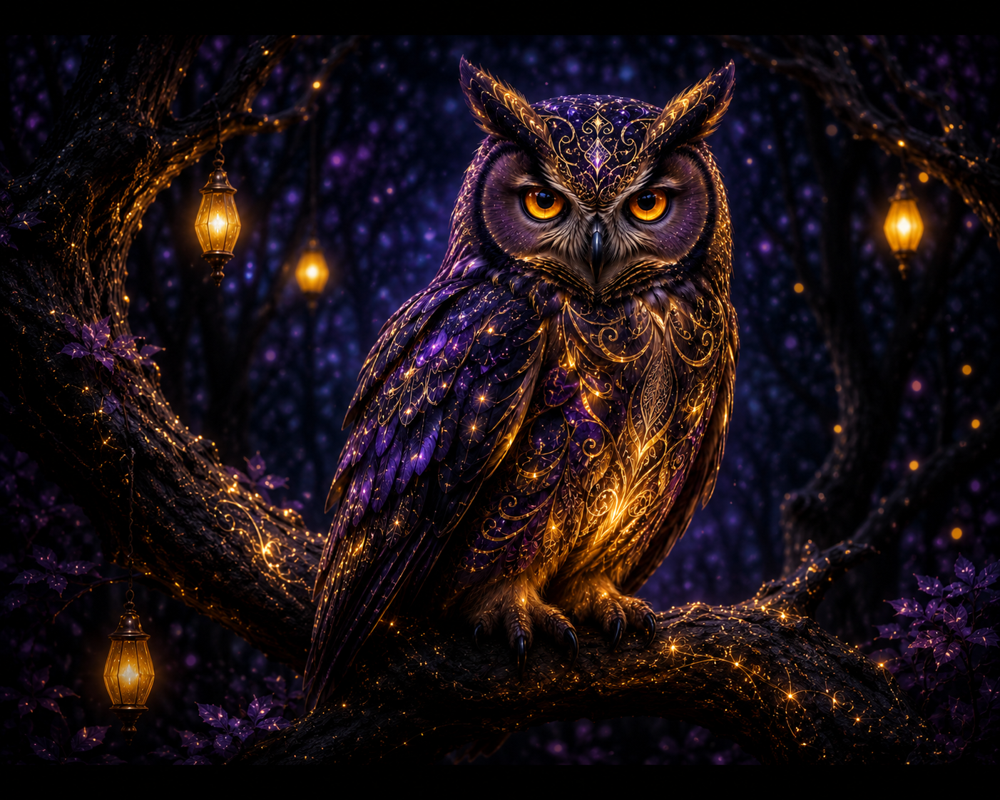
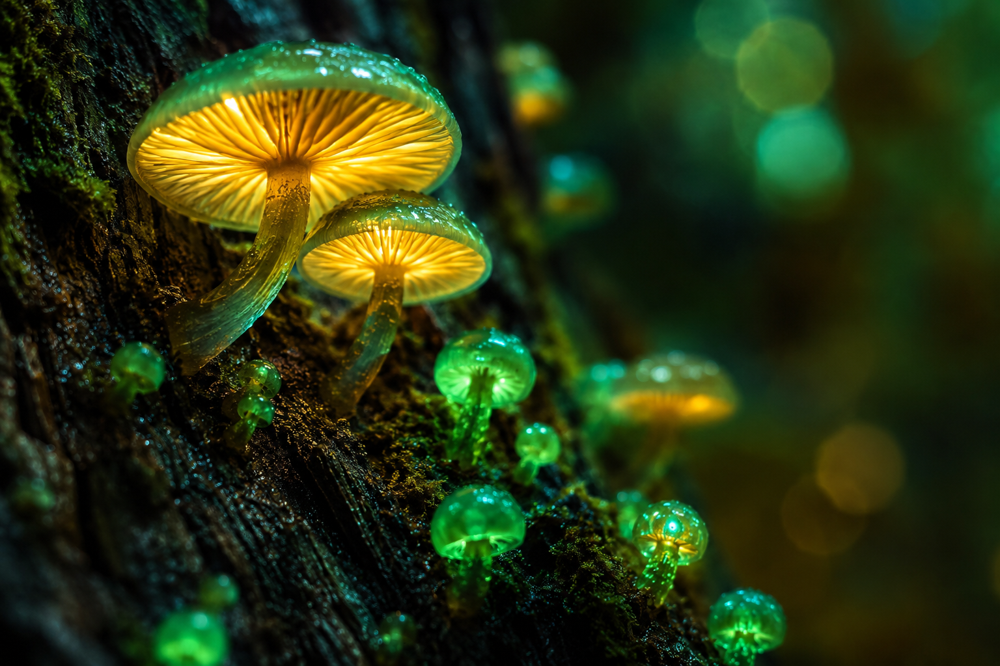
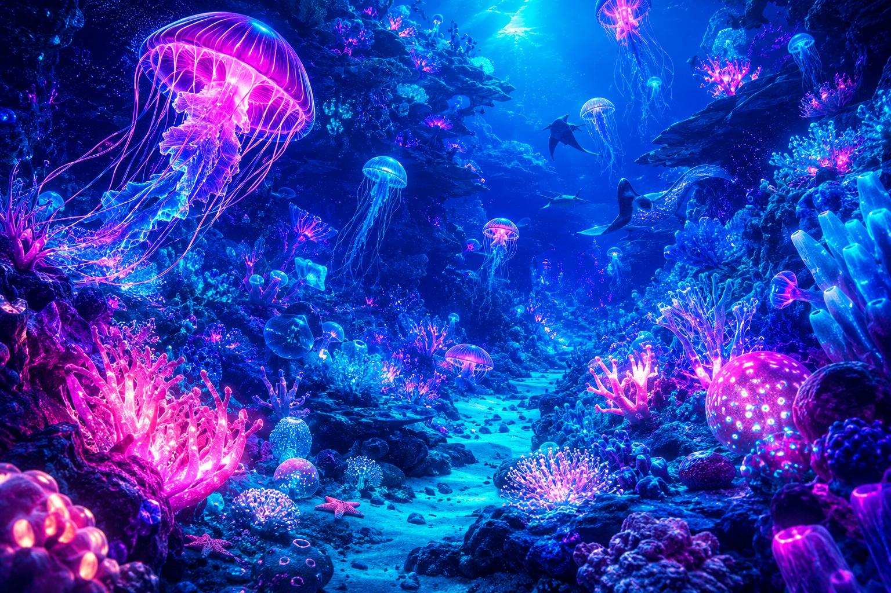
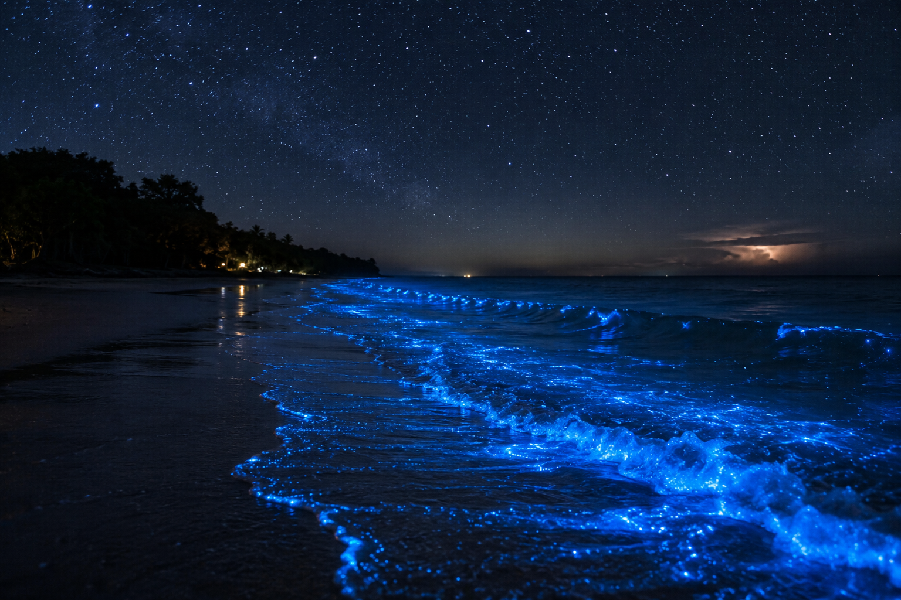
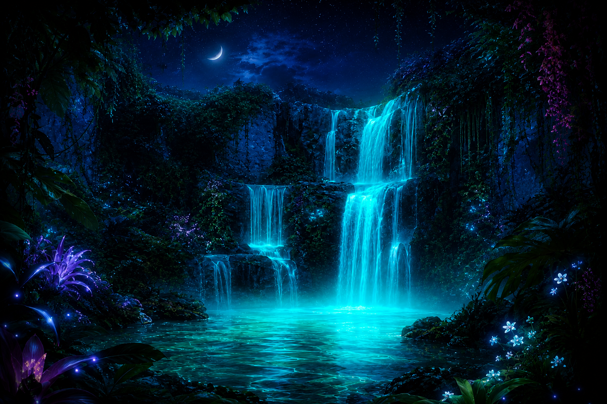

A magical bio-luminescent forest at night, ancient trees with glowing neon blue and purple moss, ethereal atmosphere, cinematic lighting, ultra-detailed, 8k.

Inside a dark cave with thousands of glowing glowworms on the ceiling, creating a starry night effect, a small underground river reflecting the blue light.

A majestic stag with glowing, crystal-like antlers walking through a dark, foggy forest, soft neon accents on its fur, fantasy art style, epic scale.

A magical owl perched on a branch, its feathers subtly glowing with golden and purple patterns, sharp focus on the glowing eyes, dark enchanted background.

Close-up shot of alien-like bioluminescent mushrooms growing on an old tree bark, glowing with soft golden and emerald green light, macro photography, depth of field.

A magical bio-luminescent forest at night, ancient trees with glowing neon blue and purple moss, ethereal atmosphere, cinematic lighting, ultra-detailed, 8k.

A night beach with bioluminescent plankton glowing bright blue in the breaking waves, starry night sky above, magical and peaceful atmosphere, photorealistic.

A hidden jungle waterfall at night where the water glows with a soft turquoise light, exotic bioluminescent plants framing the view, dreamy atmosphere.